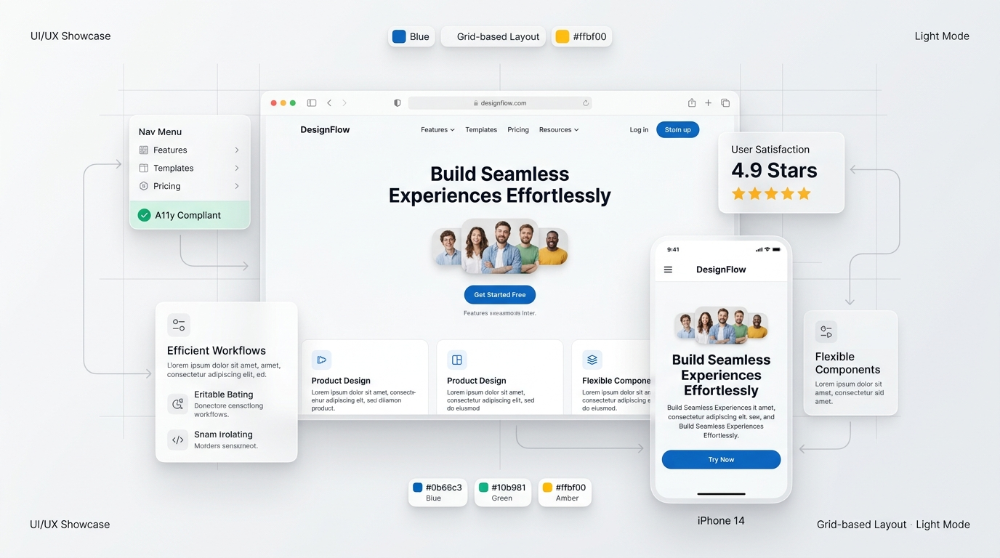

Why Do Some Websites Feel Amazing While Others Feel Frustrating?
Picture this scenario: you need to purchase a wireless keyboard online. You visit Store A. The homepage loads in under a second. The search bar is immediately visible with helpful auto-suggestions. In three clicks, you compare key features, check genuine customer reviews, select your preferred colour, and complete checkout with zero confusion. The entire interaction feels natural, effortless, and pleasant.
Now imagine visiting Store B for the same keyboard. As soon as the page opens, three promotional popups block your screen. When you tap the search icon on your phone, an accidental banner click sends you to an unrelated promotional page. The text is light gray on a white background, making it hard to read. Worst of all, after carefully typing your delivery address, an error message appears in tiny red letters at the top of the form, clearing all your inputs without explaining what went wrong.
Both websites offer similar products at identical prices. Yet one leaves you feeling satisfied, while the other makes you want to close the tab and never return. What creates this massive difference in user perception?
The Foundation: Untangling UI and UX
When discussing website quality, people often lump terms together under the umbrella of "design." In modern web development, however, great digital experiences stem from two distinct yet deeply intertwined disciplines: User Interface (UI) and User Experience (UX).
User Interface (UI) encompasses everything the visitor physically sees and touches on the screen. It is the visual craftsmanship: the typography scales, the color palette harmonies, the micro-interaction animations, the icon sets, and the button border radiuses. UI makes an application aesthetically attractive and visually organized.
User Experience (UX), on the other hand, is the invisible architecture of feeling. It is the psychological ease, efficiency, and satisfaction a visitor feels while trying to accomplish a goal. UX dictates how information is categorized, how many steps it takes to book a service, whether navigation is predictable, and how forgiving the system is when a user makes a mistake.
A website with gorgeous UI but dreadful UX is like a luxury sports car with square wheels: visually stunning on a poster, but excruciatingly painful to drive. A website feels amazing only when exceptional UI and thoughtful UX work in harmony.
The Hallmarks of an Enjoyable Digital Experience
Websites that feel intuitive do not happen by accident. They are engineered with deliberate focus on human psychology and technical excellence:
1. Intuitive Navigation and Visual Hierarchy
When a visitor lands on a web page, their eyes scan in natural reading patterns (such as the F-pattern or Z-pattern). Great websites guide attention effortlessly through visual hierarchy. Primary headlines stand out with clear weight; supporting context uses comfortable font sizes; primary action buttons use high-contrast brand colors. Navigation menus are categorized logically rather than forcing users to guess where crucial pages live.
2. Intentional Whitespace and Typographic Legibility
Frustrating websites suffer from digital claustrophobia: cramped banners, crammed paragraphs, and competing advertisements fighting for attention. Enjoyable websites embrace generous whitespace. Generous line heights (1.7 to 1.8), optimal reading column widths (60 to 75 characters per line), and strong color contrast ratios give visitors' eyes room to breathe, dramatically reducing cognitive fatigue.
3. Snappy Performance and Zero Layout Shifts
Speed is not just an engineering metric; it is an emotional feature. Studies consistently prove that visitors perceive websites loading in under two seconds as significantly more trustworthy. Furthermore, nothing is more infuriating than tapping a link just as an unsized banner loads above it, causing the entire layout to jump (a high Cumulative Layout Shift, or CLS) and triggering an unintended click. Smooth websites ensure zero layout displacement and instantaneous visual feedback.
Responsive Design and Accessibility: Serving Every User
Over sixty percent of global web traffic originates on mobile devices. A website cannot be considered high-quality unless it performs flawlessly on small touchscreens. Responsive design goes far beyond shrinking a desktop layout:
On mobile devices, human thumbs are the primary input mechanism. Interactive buttons and navigational links must meet minimum touch target standards (at least 44 by 44 pixels) with adequate spacing to prevent mistaps. Form inputs must trigger the correct virtual keyboard (e.g., numeric keypad for phone numbers, email keyboard with "@" symbols for email fields).
Equally vital is Web Accessibility (a11y). Digital accessibility ensures that individuals with visual impairments, motor disabilities, or temporary injuries can navigate and consume web content effectively. Following Web Content Accessibility Guidelines (WCAG) means writing semantic HTML5 tags (such as <nav>, <main>, and <button>), providing descriptive alt attributes for images, ensuring full keyboard navigability without a mouse, and maintaining high color contrast for readability in bright sunlight.
Forgiving Systems: The Art of Human Error Handling
Humans are prone to making mistakes when filling out forms, searching for products, or inputting data. Frustrating websites treat user errors like criminal offenses: they throw cryptic error codes, refresh the page, and erase everything the user has typed.
Thoughtful websites practice defensive and empathetic design. They provide inline validation that gently confirms when an email address is valid before submitting. If an error occurs, the form preserves all entered data, scrolls smoothly to the problematic field, and explains in plain, conversational language how to fix it (for example: "Please include an '@' symbol in your email address" rather than "Validation Error 422: Malformed payload").
Tools and Techniques Modern Developers Use
Creating user-friendly web applications requires a robust technical toolkit. Modern software engineers combine design intuition with automated performance tools:
- Semantic HTML5 & Modern CSS: Utilizing CSS Grid, Flexbox, media queries, and modern fluid typography clamps to create robust, adaptive layouts without unnecessary scripts.
- Modern JavaScript & Component Libraries: Using modern ES6+ and libraries like React to build snappy, reactive user interfaces with instant client-side transitions.
- Browser Developer Tools: Inspecting network waterfalls, simulating slow 3G cellular connections, testing touch emulation, and analyzing memory performance.
- Google Lighthouse & Core Web Vitals: Automated auditing suites that measure Largest Contentful Paint (LCP), Interaction to Next Paint (INP), and accessibility compliance.
- User Testing & Usability Observation: Watching real, non-technical people attempt to complete key tasks on the website, identifying moments of hesitation, and refining the interface based on observed human behavior.
Crafting Exceptional Websites with Skilled.u
Behind every website that feels intuitive, reliable, and delightful is a skilled developer who understands the intersection of visual aesthetics, human psychology, and clean code. In today's digital economy, businesses actively seek frontend and full-stack developers who can build interfaces that convert visitors into loyal customers.
At Skilled.u in Ujjain, our practical Frontend Development programs and comprehensive Full Stack Development training teach you not just how to write code, but how to think like a product designer. Learn responsive design, modern UI/UX principles, performance optimization, and real-world web architecture with personalized mentorship right here in Ujjain.